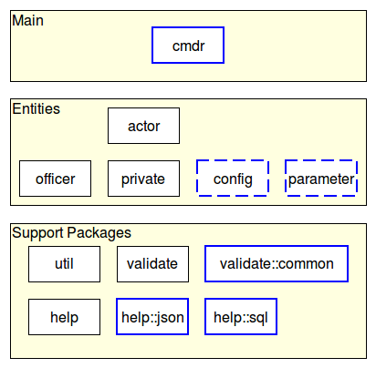
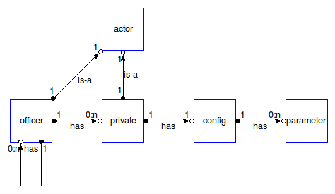
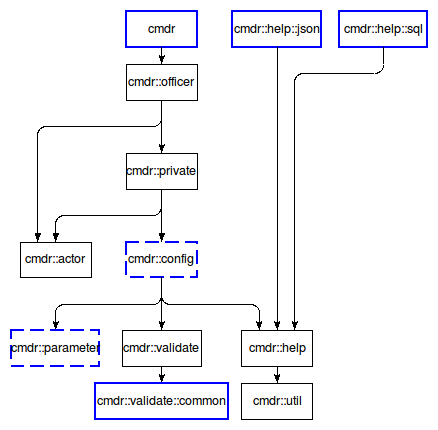

cmdr-introduction - Cmdr - Introduction to the project
Welcome to the Cmdr project, written by Andreas Kupries.
For availability please read Cmdr - How To Get The Sources.
The cmdr framework is a set of 12 related Tcl packages for the easy specification of the interfaces of command line applications. This means the declaration of the set of commands to be provided by an application, and their parameters, be they options or positional inputs. At runtime the internals of the framework, guided by the chosen specification, handle the bulk of processing $::argv. This covers determining the requested command, mapping argument words to command parameters, and validating them. Additional features of the runtime are an integrated help system and interactive command line shells with basic command and argument completion.
All packages in the framework belong to one of three layers, as shown below:

Note that:
Packages marked with a dashed blue border are public in parts, and private in parts.
Packages marked with an unbroken blue border are fully public.
The topmost layer contains only a single package, cmdr, which is the trivial entry point to the system.
The bottom layer contains the mainly internal utility packages. The exception is cmdr::validate::common, for use in bespoke validation types. See the document about Cmdr - Writing custom validation types for details.
The important pieces implementing the various entities are all in the middle layer. The relationship of these entities can be seen in the next diagram:

The dependencies between the packages are very straight-forward, following mostly directly out of the relationships shown above, plus the few where the utilities are imported. To reduce the complexity of the diagram below a few direct dependencies on cmdr::util were omitted where indirectly present through other dependencies (i.e. through cmdr::help):

This is a bit large for this document, and can be found in the separate Cmdr - Introduction to the Specification Language.
While the framework as is should cover most to all of the common cases where is always the possibility of encountering unanticipated situations. Because of that the framework has two places where it can be extended to make it fit uncommon requirements. And while the DSL document chain referenced in the previous section does mention these as well in the appropriate places this is a bit hidden. So, for better visibility, an early mention:
While the framework has a set of standard validation types for checking and converting inputs these handle only very generic types of input. Applications often have special input requiring bespoke validation. How to write such is explained in Cmdr - Writing custom validation types.
Less often an application may require a special format for help generated from its command hierarchy, beyond the standard formats made available by the framework. How to write such is explained in Cmdr - Writing custom help formats.
Cmdr - Introduction to the project
Both the package(s) and this documentation will undoubtedly contain bugs and other problems. Please report such at Cmdr Tickets.
Please also report any ideas you may have for enhancements of either package(s) and/or documentation.
arguments, command hierarchy, command line completion, command line handling, command tree, editing command line, help for command line, hierarchy of commands, interactive command shell, optional arguments, options, parameters, processing command line, tree of commands
Copyright © 2013 Andreas Kupries
Copyright © 2013 Documentation, Andreas Kupries